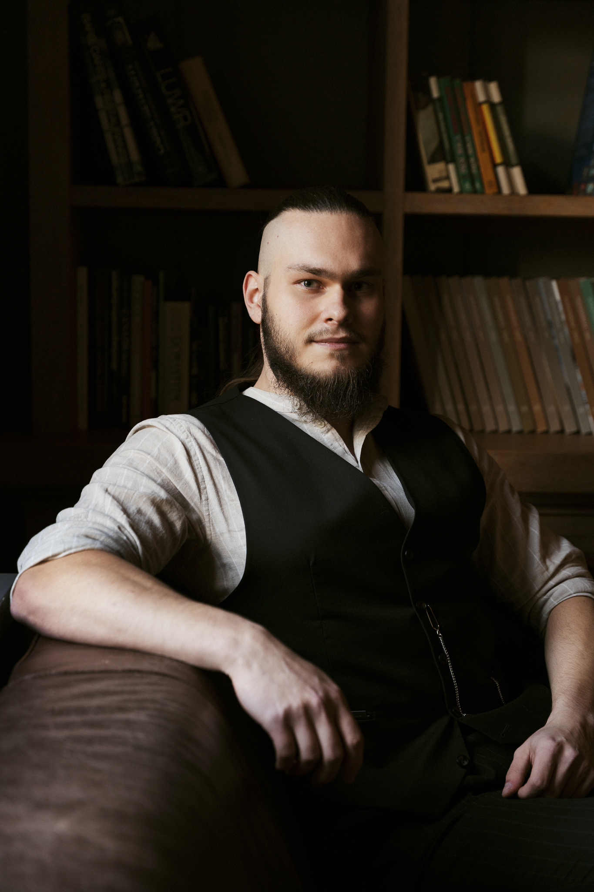

★★★★★
Paulina Jarząb
Każdy problem, z którym się mierzysz – brak pieniędzy, brak odwagi, prokrastynacja, lęk przed oceną, strach przed porażką, sabotowanie relacji czy kariery – ma jedno źródło.
Lęk. Emocje. Przekonania zapisane w podświadomości.
Blokuje Cię to, co masz zapisane głęboko w sobie – często poza świadomym dostępem.
Nie pracujemy na powierzchni. Nie „motywujemy”. Nie zaklejamy problemu afirmacją.
Docieramy do zapisu.
Usuwamy lęk.
Zmieniamy przekonanie.
Uwalniamy emocję.
A kiedy znika blokada – ruszasz. Naturalnie. Bez walki ze sobą. Bez zmuszania się.
I wtedy zaczynasz osiągać cele:

Cztery lata temu zacząłem zawodowo pomagać ludziom zmieniać ich sposób myślenia, podejście do życia i realne rezultaty, które osiągają.
Ale moja historia nie zaczęła się od pomagania innym.
Zaczęła się od bezsilności.
Był moment, w którym moje życie po prostu nie działało.
Taki, który dociska do ściany.
Taki, który sprawia, że czujesz, że
coś jest z Tobą nie tak.
Taki, który odbiera poczucie sprawczości.
W pewnym momencie zrozumiałem, że jeśli czegoś nie zmienię – moje życie będzie wyglądało dokładnie tak samo za 5, 10, 20 lat.
Zacząłem szukać rozwiązania. Najpierw zmieniłem siebie.
Znalazłem mentora, który pokazał mi skuteczne metody pracy z umysłem.
Nie motywacyjne
hasła.
Nie chwilowe „kopniaki energii”.
Realne narzędzia. Konkretne procesy. Głęboką pracę z podświadomością, przekonaniami i emocjami.
Krok po kroku zacząłem rozwiązywać swoje problemy:
Czy to oznacza, że jestem „skończony”? Nie. Ta droga nigdy się nie kończy.
Dalej pracuję nad sobą. Dalej się rozwijam.
Różnica polega na tym, że
dziś mam narzędzia.
A przede wszystkim – mam sprawczość.
W ciągu ostatnich czterech lat pomogłem ponad 1500 osobom zmienić swoje życie i wyjść z wewnętrznych blokad.
Pracowałem z:
Czuli, że mają potencjał. Ale coś ich blokowało.
Kiedy usunęliśmy zapis – zaczęli działać.
Jeśli czujesz, że możesz więcej – czas przestać analizować i zacząć usuwać to, co Cię blokuje.
"Zapisałem się na sesję, bo czułem blokady mentalne związane z sportem który uprawiam czyli piłka nożna. Bolało mnie to, że czułem brak pewności siebie żeby zaryzykować w różnych boiskowych sytuacjach i czułem przez to że nie rozwijam większości potencjału co też sprawiało że zabiera mi to radość z gry Sesje przebiegały w dobrej atmosferze nie czułem się jak na rozmowie z psychologiem było to dużo lepsze, lepiej na mnie działało praca była spersonalizowana do problemu. Zmiany przyszły szybko już na następny dzień czułem się o wiele lepiej a z każdym dniem było lepiej. Z całego serca polecam, nic tak do mnie nie trafiało jak sesja hipnozy zrobiłem duży progres i wiem że na pewno z problemem będę tu wracał."

"Cześć Z całego serca chciałbym ci podziękować za pomoc dlatego że moja głowa dotąd nie była tak dobrze nastawiona na zwycięstwo jak po naszym spotkaniu. Przejawiał się u mnie strach przed konkurowaniem i osiąganiem celów ważnych dla mnie jakim jest selekcja i dalsza służba w jednostkach specjalnych. Po pierwszym podejściu do etapu górskiego i porażce byłem zdruzgotany i nie potrafiłem skupić się na procesie który doprowadzi mnie do sukcesu. Mimo iż jestem sceptycznie nastawiony, złamałem się i zapisałem się na sesję do ciebie. Rezultaty pojawiły się już po pierwszej sesji, motywacja i skupienie które z laserową precyzją wyznacza cel, przypomina w którą stronę iść i pomimo trudności nie pozwala zboczyć na niewłaściwy tor. Jest to dla mnie przełomowe doświadczenie i polecam to każdemu kto zmaga się tak jak Ja z brakiem wiary we własne możliwości i posiada ograniczenia których sam nie może pokonać. Serdecznie dziękuję jeszcze raz. Pozdrawiam"

"Przez długi czas zmagałem się z lękiem przed konfrontacją z osobami bardziej doświadczonymi ode mnie w biznesie. Miałem poczucie bycia gorszym, mniej wartościowym. Na zewnątrz wszystko wyglądało dobrze, ale wewnętrznie czułem brak pewności siebie i napięcie, które blokowało mnie w kluczowych momentach. W pracy z Kubą weszliśmy w głęboki, spokojny stan transu. W bezpieczny i bardzo profesjonalny sposób dotarliśmy do pierwotnej przyczyny tego schematu w mojej podświadomości. Zrozumiałem, skąd on się wziął — i co najważniejsze, wspólnie usunęliśmy ten niepotrzebny program, zastępując go takim, który realnie mnie wspiera. Dzisiaj funkcjonuję zupełnie inaczej. Na co dzień operacyjnie działam w biznesie, podejmuję decyzje z większym spokojem i pewnością siebie. Czuję satysfakcję, klarowność i wewnętrzną siłę — bez napięcia i bez strachu przed spotkaniem, konfrontacją czy negocjacjami. Polecam tę pracę każdemu doświadczonemu i początkującemu przedsiębiorcy, menadżerowi oraz osobom, które są na początku własnej drogi rozwoju w twardym świecie. Jeśli czujesz, że coś w środku Cię blokuje — warto to sprawdzić i zmienić u źródła, wraz z pomocą Kuby!"

"Poszedłem na sesję do Kuby w związku z wewnętrznymi blokadami, które sprawiały że podczas kontaktów biznesowych byłem wycofany, nie umiałem jasno stawiać swoich warunków i propozycji, przez co czasami nawet umiałem pod presją zgodzić się na rzeczy które mi nie odpowiadały. Czułem przez to poirytowanie i czasami pretensje do samego siebie. Podczas jednej sesji opisałem problem Kubie i przeszliśmy do pracy z podświadomością, zaskoczyło mnie to jak łatwo i prostolinijnie przebiegła sama sesja. Czułem jakby to była po prostu rozmowa. Efekt przerósł moje oczekiwania. Wewnętrzne blokady (które zawsze mocno odczuwałem w ciele) zniknęły, a ja zacząłem prosto i bez stresu rozmawiać o swoim podejściu, rozwiązaniach, warunkach i oczekiwaniach. Zmieniło to bardzo wiele, bo w ostatnich tygodniach przyszło mi podejmować naprawdę kluczowe dla mnie decyzje i dzięki współpracy z Kubą wykonałem wszystko tak, jakbym tego od siebie oczekiwał. Wpłynęło to także na inne aspekty: po pierwsze, czuję się lepiej z samym sobą jako skuteczniejsza i pewna siebie osoba, a po drugie: czas i myśli które poświęcałem na rozmyślanie co mogłem podczas spotkań biznesowych zrobić inaczej i jak mogę to zmienić, teraz poświęcam na to co chcę robić dalej. Polecam sesje u Kuby wszystkim, którzy chcą przełamać swoje wewnętrzne blokady i przyspieszyć swoją drogę do osiągania celów."

"Z całego serca polecam Kubę – to był jeden z najlepszych wyborów w moim życiu. Dzięki naszej sesji rzuciłem palenie papierosów bez walki z samym sobą i wiecznego „od jutra”. Wyraźnie wzrosła moja pewność siebie, a codzienne sytuacje przestały mnie stresować tak jak kiedyś. Czuję, że stałem się spokojniejszym, bardziej poukładanym i po prostu lepszym człowiekiem. Kuba jest niezwykle profesjonalny, a jednocześnie ciepły i uważny – od razu wzbudza zaufanie. Jeśli ktoś się waha, to powiem krótko: warto, bo efekty naprawdę zostają na długo."

"Miałam 6 sesji hipnozy z Kubą i jestem bardzo zadowolona. Same sesje były przeprowadzone bardzo profesjonalnie, czułam się dobrze zaopiekowana. Efekty są dużo lepsze niż oczekiwałam, moje życie poprawiło się w praktycznie każdym aspekcie: relacje, finanse, praca, pasje, edukacja. Poprawiło się też ogólne samopoczucie i samoocena. A tematy z którymi pracowaliśmy były naprawdę trudne i sam proces zdrowienia po traumach, czy trudnych wydarzeniach nie jest łatwy. Uważam, że inwestycja w sesje hipnozy, to była najlepsza decyzja w moim życiu i dzięki niej jestem w zupełnie innym miejscu swojego życia, a to jeszcze nie jest koniec zmian."

"Sesja hipnotyczna z Jakubem Bednarukiem była niezwykle pozytywnym doświadczeniem, które przyniosło szybkie i trwałe efekty. Już po pierwszej sesji męczące blokady związane z pewnością siebie oraz relacjami puściły, a zmiany utrzymują się nadal. Problemy rozwiązane błyskawicznie i skutecznie. Z całego serca polecam Jakuba każdemu kto szuka konkretnego rozwiązania na konkretne problemy jak i te bardziej złożone– profesjonalista z powołaniem, wart każdej minuty :))"

"Jakub to pierwsza osoba, która wprowadziła mnie w świat realnego wpływania na własne działanie, postrzeganie siebie przez pryzmat wartości. Sesje pracy w hipnozie to doświadczenie, które polecam znajomym, którzy mają problemy z prokrastynacją, poczuciem braku własnej wartości, które zatrzymują się w jakimś miejscu i nie mogą ruszyć dalej, które mają problemy z nałogami, czy kompulsywnym objadaniem. Uważam, że Jakub pomoże każdej osobie w tych obszarach tak jak pomógł mi. Pozdrawiam"
"Pracowaliśmy nad schematem lęku przed odrzuceniem, który nasilił się po trudnym rozstaniu. Przez długi czas miałam tendencję do nadmiernego dopasowywania się i brania odpowiedzialności za relacje, z obawy że inaczej zostanę odrzucona. Sesja pozwoliła mi zmienić sposób reagowania – dziś funkcjonuję w relacjach spokojniej, bez ciągłego napięcia i potrzeby „zasługiwania” na czyjąś obecność. Poleciłabym tę formę pracy osobom, które chcą wyjść z automatycznych schematów emocjonalnych w konkretny i uporządkowany sposób."
"Ogromna zmiana aż muszę się hamować bo czuję że jestem za bardzo nakręcona i ciągle coś robię i planuje, chwilę muszę to poobserwować i jakoś się ustabilizować. Wiem że będzie głębszy temat do pracy nad sobą w kwestii bycia "wystarczającą" bo chce teraz nadrobić stracony czas i wykorzystać dobre chwile."
"Przyszłam z dużym napięciem i chaosem w emocjach, które mnie przytłaczały. Po spotkaniu poczułam wyraźną ulgę, większy spokój i klarowność myślenia. Trudno to dokładnie wytłumaczyć, ale dla mnie to było realnie pomocne. Polecam."
"Siemanko! Słuchaj, jestem zachwycony. Dopiero jak napisałeś zdałem sobie sprawę, że od sesji mija niecałe dwa tygodnie, mam dużo pracy związanej z targami broni w następny weekend i muszę powiedzieć, że najbardziej odczuwam taki „lekki umysł”. Po prostu jakoś mam mniej chaosu w głowie. Łatwiej mi przychodzi działanie, łatwiej też mi przełamać jakieś prokrastynacyjne zachowania. Bardzo chętnie skorzystałbym z kolejnej sesji. Namówię też małżonkę, ona akurat szuka takich form pracy nad sobą. Dzięki że pytasz!"
"Siemanko Kuba! Miło, że pytasz. Jeśli chodzi o życie po naszej sesji to naprawdę dużo się zmieniło i to jeszcze tego samego dnia. Jechałem na sparingi totalnie bez presji, naładowany taką pozytywną energią z myślą o tym, żeby po prostu dobrze się bawić a nie cokolwiek udowadniać. Zmiana była kolosalna, zamiast wybierać sobie łatwych sparingpartnerów to jakoś tak naturalnie moje głowa wybierała tych najmocniejszy, jakbym naturalnie polubił dyskomfort i trenowanie „ciężko” sprawiało mi po prostu więcej radości niż takie na pół gwizdka. Aż jestem ciekawy co będzie dalej i na pewno umówimy sie na następną 👊💪"
"Jeśli chodzi o współpracę z Kubą - pełen profesjonalizm! Przyszedłem do Kuby z lękowymi reakcjami na mamę. Pracowaliśmy z Kubą przez całą godzinę, w trakcie sesji przerobiliśmy wiele emocji w tym nawet takie, które były wpisane już w wieku niemowlęcym. Kuba odpowiedz dokładnie na każde moje pytanie i był do dyspozycji. Zmieniliśmy moje postrzeganie zachowań matki, poprawiliśmy moją samoocenę. Wiele rzeczy mi się rozjaśniło jak to, ze nie jestem zależny od mojej mamy. Po sesji z dnia na dzień rozumiałem więcej i do tej pory dzięki sesji z Kubą mogę podejmować pewne decyzje które kształtują moje życie. Kuba działa z każdym problemem. Po prostu warto przyjść i się przekonać. Kluczowe jest to, żeby mu zaufać"
"Polecam serdecznie sesję z Jakubem. Jego intencje są czyste i jest bardzo empatyczną osobą, której można powiedzieć wszystko bez oceny. Po wstępnej, pierwszej sesji czułem się lekki, spokojny, umysł był czystszy i łatwiej było mi wejść w stany medytacyjne."
"- Bardzo się cieszę, czyli te tematy porno, objadania się itd już puściły
całkowicie?
- Puściły, sprawdzone w różnych sytuacjach:)"